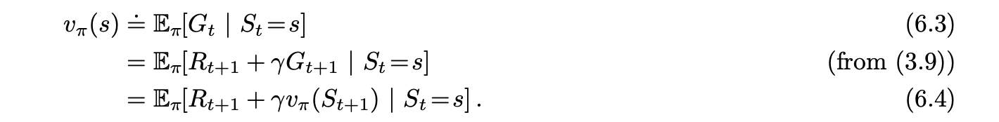
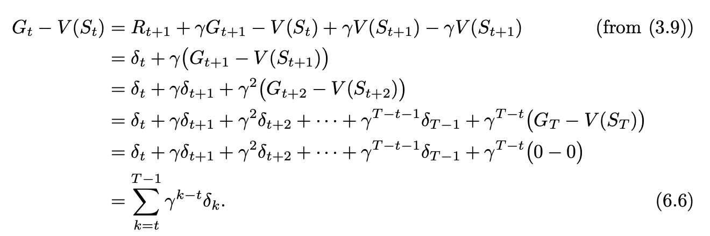

- Abstract
- TD Prediction
- Advantages of TD Prediction Methods
- Optimality of TD(0)
Abstract
TD learning is a combination of Monte Carlo ideas and dynamic programming (DP) ideas. Like Monte Carlo methods, TD methods can learn directly from raw experience without a model of the environment’s dynamics. Like DP, TD methods update estimates based in part on other learned estimates, without waiting for a final outcome (they bootstrap).
TD Prediction
At time t + 1 they immediately form a target and make a useful update using the observed reward Rt+1 and the estimate V (St+1). The simplest TD method makes the update
$V(S_t) \leftarrow V(S_t) + \alpha * (R_{t+1} + \gamma * V(S_{t+1}) - V(S_t))$

Roughly speaking, Monte Carlo methods use an estimate of (6.3) as a target, whereas DP methods use an estimate of (6.4) as a target. The Monte Carlo target is an estimate because the expected value in (6.3) is not known
We refer to TD and Monte Carlo updates as sample updates because
they involve looking ahead to a sample successor state (or state–action pair),
using the value of the successor and the reward along the way to compute a
backed-up value, and then updating the value of the original state (or state–
action pair) accordingly.
Sample updates differ from the expected updates
of DP methods in that they are based on a single sample successor rather than on a complete distribution of all possible successors.
Also note that if the array V does not change during the episode (as it does not in Monte Carlo methods), then the Monte Carlo error can be written as a sum of TD errors:

Advantages of TD Prediction Methods
The next most obvious advantage of TD methods over Monte Carlo methods is that
they are naturally implemented in an online, fully incremental fashion.
For any fixed policy $\pi$, TD(0) has been proved to converge to $v_\pi$, in the mean for a constant step-size parameter if it is suffciently small, and with probability 1 if the step-size parameter decreases according to the usual stochastic approximation conditions
If both TD and Monte Carlo methods converge asymptotically to the correct predictions, then a natural next question is “Which gets there first?” In other words, which method learns faster? Which makes the more effcient use of limited data? At the current time this is an open question in the sense that no one has been able to prove mathematically that one method converges faster than the other. In fact, it is not even clear what is the most appropriate formal way to phrase this question! In practice, however, TD methods have usually been found to converge faster than constant-$\alpha$ MC methods on stochastic tasks, as illustrated in Example 6.2.
Optimality of TD(0)
the increments specified are computed for every time step t at which a nonterminal state is visited but the value function is changed only once, by the sum of all the increments. We call this batch updating because updates are made only after processing each complete batch of training data.
Batch Monte Carlo methods always find the estimates that minimize mean-squared error on the training set, whereas batch TD(0) always finds the estimates that would be exactly correct for the maximum-likelihood model of the Markov process.
In this chpater, I review MLE MAP here.
for the function $P(x|\theta)$ if we know the $\theta$ to predict x is probability function. if we know x, for different $\theta$ the probability to get the x distribution
For the MLE we maximum the $P(x|\theta)$. But for MLP, we also want to let the $P(\theta)$ be maximum, because except for the x, under $\theta$ $P(x|theta)$ will be the maximum, the $P(\theta)$ also shall be the maximum. We can see MLE as a special case of MAP that $P(\theta) == 1$ because we consider $\theta$ is a fixed value, but for bayes’s consideration, theta we have some prior knowledge and we need to add it to the formula.
This is called the certainty-equivalence estimate because it is equivalent to assuming that the estimate of the underlying process was known with certainty rather than being approximated.
Although the nonbatch methods do not achieve either the certainty-equivalence or the minimum squared-error estimates, they can be understood as moving roughly in these directions.
What is Temporal Difference (TD) learning?
we want to compute the retur, but we don’t want to wait for the episode ends. Thus, we use the next vt as the expected return. In DP, we update it toward the value of all possible next states. The primary difference is in DP, we use an expectation over all possible next states. We needed a model of the environment to compute this expectation, in TD we only need the next state. We can get that directly from the environment without a model.
S,A,R,S,A,R,S,A. Because we need to use TD(1) => S,A,R,S, A => SARSA algorithm!
The Importance of TD Learning
Prediction is unsupervised and supervised learning.
The advantages of temporal difference learning
Comparing TD and Monte Carlo
Andy Barto and Rich Sutton: More on the History of RL
In the current literature by sophisticated people misunderstanding the distinction between error correction and trial and error.
I mean it’s already prone to new behaviors which is irritating because all these models and value functions and all kinds of things that pure behaviorists would just not allow in interference. So it’s not behaviors.
you do something for its own sake, rather than perform an extrinsic reward of some kind. I think it’s very powerful, I mean I’ve got actually because I got and still think it’s a good way to create subskills
Summary
In this section, we learn the TD algorithm. In my view, it use the guess of last term to update current value. It’s more like we DP. But also, it do not rely on the probability transformation. It only update the reward and next states’ guess value. When we correct some guess value (value function) in one episode, in the next episode, we will update state values function more accurately.
In program assignment, we know that $alpha(R_{t+1} + gammaG_{t+1})$ There is two constant, discount and step size!
MC targets generally have higher variance while TD(0) targets usually have lower variance.